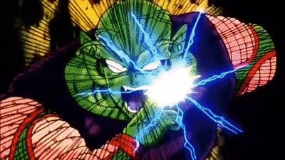
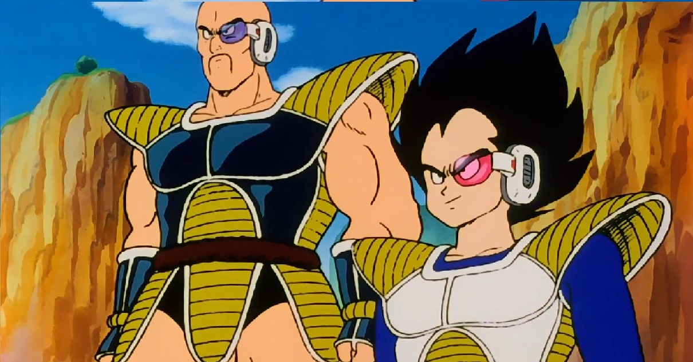
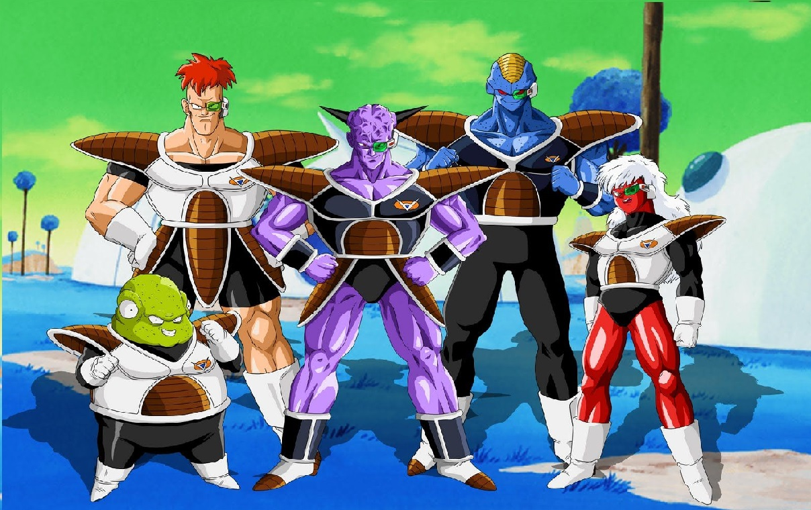
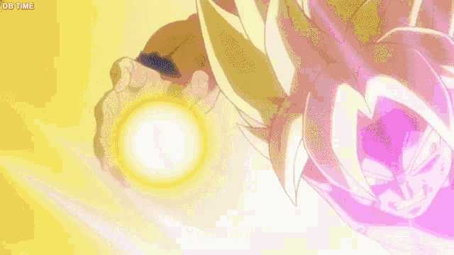

Cinco años después de la pelea contra Piccolo, Goku se encuentra viviendo felizmente con Chi-Chi en la Montaña Paoz; Incluso tienen un hijo, llamado Gohan, de cuatro años. Todo parece estar en paz, hasta que un extraterrestre llega a la Tierra, preguntando por un tal Kakarot. El extraterrestre se presenta como Raditz, que para sorpresa de todos pero más aún del propio Goku, resulta ser su hermano mayor y dice pertenecer a los saiyans, una raza de despiadados y poderosos guerreros que conquistan planetas. Según Raditz, el verdadero nombre de Goku es Kakarot, quien además proviene del planeta natal de los saiyans (el Planeta Vegeta) y que al nacer fue enviado a la Tierra para acabar con todos sus habitantes. Aunque Goku lo niega todo, Raditz le indica que los saiyans poseen cola, y Gohan la tiene, aunque para su indignación, Goku no.
Como Goku no atiende razones, Raditz decide obligarlo a que cumpla la misión para la que fue programado, y rapta a Gohan, amenazando con matarlo si en 24 horas no le trae 100 cuerpos de humanos muertos. Cuando Goku trata de atacarlo, Raditz lo vence de un solo golpe. Piccolo viendo cuan grave y seria era la situación, se alía con Goku (aludiendo que Raditz interfiere con sus planes de conquista) y le plantan cara a su malvado hermano.
Tras una ardua batalla donde ni siquiera combinando sus fuerzas, Piccolo y Goku parecen hacerle daño, a Piccolo se le ocurre utilizar una técnica devastadora nueva, pero necesita tiempo de canalización. Goku le grita que le conseguirá ese tiempo, pero que, llegado el momento, no dude en atacar con todas sus fuerzas y que por favor, no falle. Tras unos minutos donde Raditz barre el suelo con el pobre Goku, Piccolo tiene la técnica lista. En ese momento, Goku inmoviliza a Raditz por la espalda, y le da la señal a Piccolo quien, tras darle las gracias al joven Goku, lanza su increíble técnica, atravesando a ambos con ella y poniendo fin a la vida de los hermanos. El sacrificio de Goku no será olvidado.
Raditz, justo antes de morir, advierte a Piccolo y Goku que dentro de dos años, llegarán dos Saiyans más. Guerreros de clase alta con un poder muy superior al suyo, que destruirán el planeta. Ante dicha amenaza, y sintiéndose responsable de la muerte de Goku, Piccolo toma a su hijo Gohan como su discípulo, para prepararlo frente a la llegada de dichos Saiyan, ya que necesitarán toda la ayuda posible. Goku, por su parte, entrenará en el cielo con el Kaio del Norte.
Pasan dos largos años, donde todos los Guerreros Z entrenan duramente, ante el miedo del increíble poder de los Saiyan de clase alta. Goku aprende el Kaio-Ken en el Más Allá y eleva sus Unidades de Poder a 8000, un número impresionante. Mientras tanto, Piccolo entrena con Gohan, elevando sus poderes a 3000 y 2000 respectivamente. El resto de los Guerreros Z alcanzan un poder entre 1000 y 1500, entrenando con Kami-Sama, el Dios de la Tierra. Y tras el tiempo estimado, la profecía de Raditz se cumple, para terror de todos. Nappa y Vegeta habían llegado.
Todos los Guerreros Z, a excepción de Goku, se congregan en el sitio del impacto de las naves de los Saiyan. Aterrados, sienten su inmenso poder, pero no dudan en luchar. Nappa, el más grande de los dos, al parecer era el más débil, y es ordenado por Vegeta, el más bajito, para que luche contra todos los guerreros. Haciendo gala de una fuerza descomunal, acaba con la vida de los héroes, uno detrás de otro. Tenshinhan es el primero en caer, seguido por Chaos, su pupilo. Piccolo da la vida protegiendo al joven Gohan, admitiendo en su lecho de muerte que fue el único amigo que tuvo. Gohan, tras estas palabras, y pese a su corta edad (aproximadamente 11 años) se enfurece y hace gala de un poder impresionante, digno de un gran guerrero. No obstante, Nappa demuestra ser superior.
Justo antes de que el gigante termine con la vida del infante, Goku llega en el último momento para salvarlo. Le propina una paliza en apenas unos segundos a Nappa, para asombro de su hijo y de Krillin, únicos supervivientes, y ante la mirada atónita de Vegeta, aún a la espera para combatir, quien admite que Kakarot tiene más de 8000 unidades de poder. Tras la muerte de Nappa, Vegeta se prepara para pelear y, tras acceder a la condición de Goku de hacerlo alejados de la civilización, la batalla comienza. Goku se ve claramente superado por su impresionante adversario, quien repetidas veces se mofa del nivel del saiyan criado en la Tierra. No obstante, con la última fuerza de voluntad, Goku utiliza el Kaio-Ken x3 y lanza un poderoso Kame-Hame-Ha contra Vegeta, quien responde con su poderoso Galick Gun, pero pierde el choque de poderes y es finalmente derrotado. Goku, para sorpresa de todos, le perdona la vida al tirano y le permite huir, aclamando que se volverán a enfrentar algún día.

Tras la pelea con Vegeta, Goku queda malherido y en coma en un hospital. Durante ese tiempo, Krillin y Gohan, únicos supervivientes de la masacre de los Saiyan, se ponen como objetivo recuperar las vidas de todos los guerreros caídos. Para lograr dicha hazaña, han de viajar al planeta originario de Piccolo, Namek, en busca de las Dragon Ball originales, puesto que con la muerte del namekiano a manos de Nappa, las Dragon Ball de la Tierra habían desaparecido. Así, el padre de Bulma modifica una de las naves de los Saiyan para que su hija, Krillin y Gohan, viajen a Namek en busca de dichas Dragon Ball y le devuelvan la vida a todos los guerreros perdidos.
Una vez llegan a Namek, se enteran de que no son los únicos en busca de las Dragon Ball: Vegeta y, lo más aterrador, el Emperador Freezer, también andan detrás de los objetos mágicos. El propio Vegeta se hace con 6 Dragon Ball tras matar a los soldados Cui, Zarbon y Dodoria, de la élite personal de Freezer, mientras que Gohan y Krillin consiguen esconder una Dragon Ball para evitar que tanto Freezer como Vegeta puedan pedir el deseo al Dragón Porunga. No obstante, cuando Freezer se entera de que habían conspirado contra él y le habían robado las Dragon Ball, envía a fuerza especial Ginyu, la fuerza de mayor rango de su ejército, a recuperarlas.
Ni siquiera el poderoso Vegeta puede hacerles frente, y cae junto con Krillin y Gohan. Sin embargo, antes de que se derramara sangre, llega Goku, proveniente de la Tierra, tras haber entrenado como nunca. Derrota sin problema a toda la fuerza Ginyu, para sorpresa de todos los presentes. Freezer, con ganas de "jugar", acaba con la vida del orgulloso Vegeta, quien en su lecho de muerte y entre lágrimas, le ruega a Goku que mate a Freezer, pues es quien asesinó a toda su raza antaño. Tras un duro combate, Freezer se cansa y acaba con la vida de Krillin, lo que causa la cólera de Goku, alcanzando la legendaria fase del Super Saiyan, para pavor del Emperador. La batalla por el destino del Universo, daba comienzo.
Incluso habiendo rebasado su límite, el poder de Freezer era claramente inferior al del legendario guerrero dorado. Y para más inri, habiendo sobreesforzado su cuerpo de semejante manera, comenzaba a perder poder a una velocidad alarmante. Goku, inteligente, ya se había dado cuenta de esto, por lo que insta al tirano a rendirse, antes de que la pelea acabara con él. Sin embargo, el orgulloso Emperador, en un arrebato de ira, lanza un poderoso ataque al núcleo del planeta, clamando que de morir, el asqueroso Saiyan lo haría con él. Viendo su actitud, Goku no tiene de otra que poner fin a la vida del tirano, permitiendo que sus amigos volvieran a la Tierra con el deseo de las Dragon Ball, y escapando él en el último segundo utilizando una nave de Freezer del planeta Namek.
Akira Toriyama hablando de cómo su Manga Dragon Ball Z impactó en la cultura popular